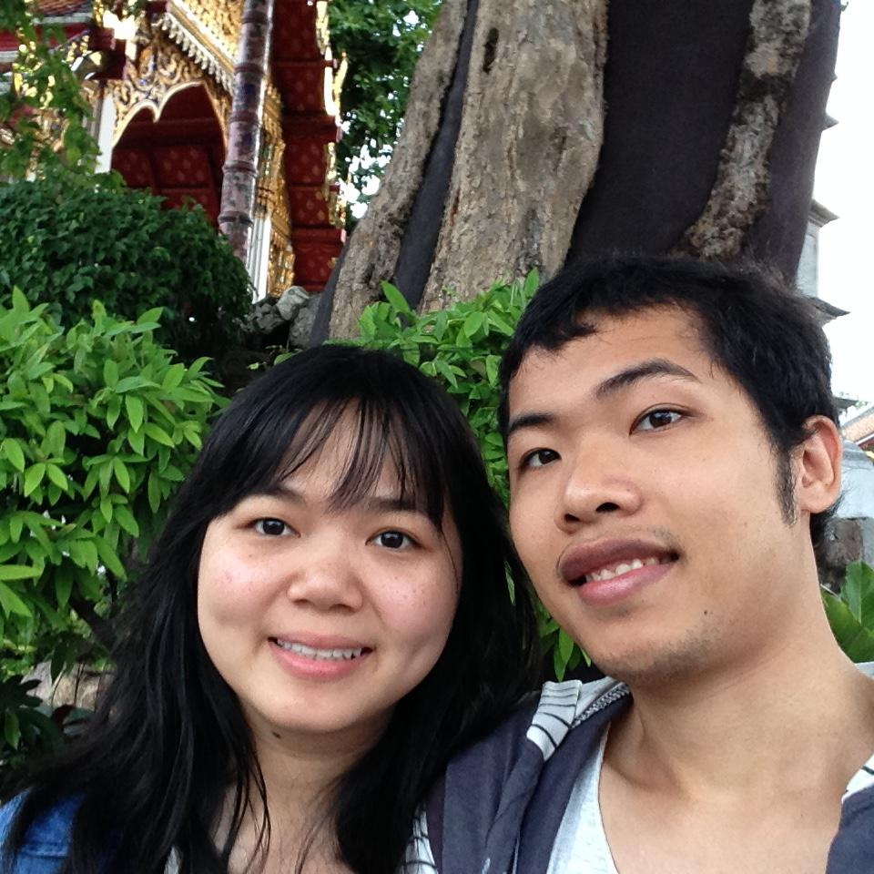

About
My name is Du Phan. I am currently doing Math PhD at POSTECH, Korea. My research topic is about kinetic theory, especially Fokker-Planck equation. In addition to thinking about Math, I have a deep interest in Machine Learning and Deep Learning. I learn a lot from free materials around internet and I hope that with this blog, I can share back my knowledge to the community.
My hobbies include playing flute, chess, and badminton, studying physics, and reading.
